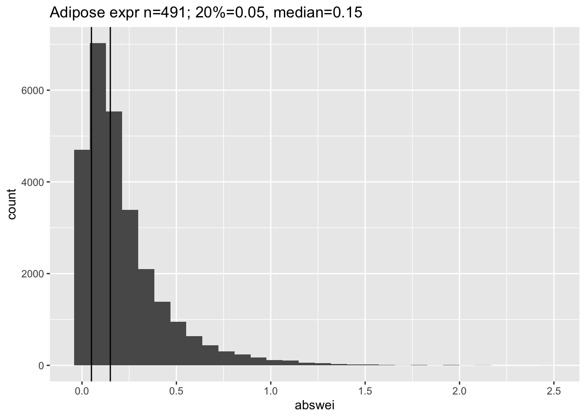

suppressMessages(library(tidyverse))suppressMessages(library(glue))PRE ="/Users/haekyungim/Library/CloudStorage/Box-Box/LargeFiles/imlab-data/data-Github/web-data"##PRE="/Users/margaretperry/Library/CloudStorage/Box-Box/imlab-data/data-Github/web-data "##PRE="/Users/temi/Library/CloudStorage/Box-Box/imlab-data/data-Github/web-data"## COPY THE DATE AND SLUG fields FROM THE HEADERSLUG="predictdb-weight-distribution"## copy the slug from the headerbDATE='2023-02-28'## copy the date from the blog's header hereDATA =glue("{PRE}/{bDATE}-{SLUG}")if(!file.exists(DATA)) system(glue::glue("mkdir {DATA}"))WORK=DATAUSERNAME="haekyungim"## move data to DATA#tempodata=("~/Downloads/tempo/gwas_catalog_v1.0.2-associations_e105_r2022-04-07.tsv")#system(glue::glue("cp {tempodata} {DATA}/"))## system(glue("open {DATA}")) ## this will open the folder
download mashr gtex v8 prediction models for various
dbname <-glue("{DATA}/eqtl/mashr_Adipose_Subcutaneous.db") ## add full path if db file not in current directorymyshowdist(dbname,titulo="Adipose expr n=491")
`stat_bin()` using `bins = 30`. Pick better value with `binwidth`.

read weights brain substantia nigra with 101 samples
Show the code
dbname <-glue("{DATA}/eqtl/mashr_Brain_Substantia_nigra.db") ## add full path if db file not in current directorymyshowdist(dbname,titulo="Brain SN expr - n=101")